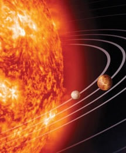

一幅图像
一幅动图像
请注意，插入动画图像的语法与插入普通图像的语法没有区别。
gif 和 jpg 文件均可用作 HTML 背景。
如果图像小于页面，图像会进行重复。
图像 在文本中
图像 在文本中
图像 在文本中
图像 在文本中
请注意，bottom 对齐方式是默认的对齐方式。
带有图像的一个段落。图像的 align 属性设置为 "left"。图像将浮动到文本的左侧。
带有图像的一个段落。图像的 align 属性设置为 "right"。图像将浮动到文本的右侧。
请点击图像上的星球，把它们放大。
注释：img 元素中的 "usemap" 属性引用 map 元素中的 "id" 或 "name" 属性（根据浏览器），所以我们同时向 map 元素添加了 "id" 和 "name" 属性。
请把鼠标移动到图像上，看一下状态栏的坐标如何变化。